Fairmeadow Robotics Newsletter #2
An update from our friendly neighborhood Fairmeadow Robotics Team.
By Manisha Verma. Mar 22, 2026
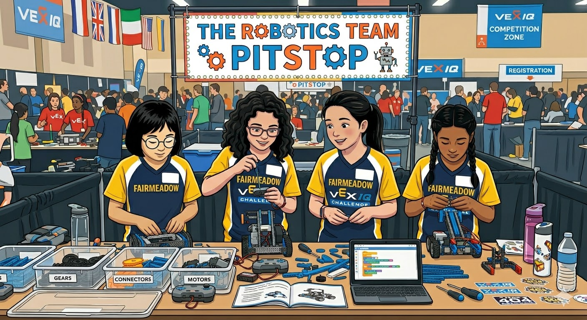
From Building to Presenting
Before the 2025 year ended, we had a demo day where the girls practiced presenting their robotics work.
- Demonstrated how they use the controller to drive and operate the robot
- Walked through the programming blocks on the laptop
- Explained what different parts of the robot do
- Discussed how the robot moves and how attachments like the claw or lift work
- Practiced presenting their work in front of others
This is an important step because robotics competitions are not just about building a robot. They also require explaining design decisions, walking through code, reflecting on what worked and what did not, and presenting ideas as a team.
Now the girls are beginning to move from just building robots to thinking like engineers — explaining their design decisions, showing how their program works, and demonstrating their robot in action.
We will continue practicing:
- Robot demonstrations
- Explaining code
- Explained what different parts of the robot do
- Presenting design ideas
- Answering questions about their robot
All of this will help prepare them for the upcoming Science Fair and future robotics competitions, where communication and presentation are just as important as building.
Our Workshop
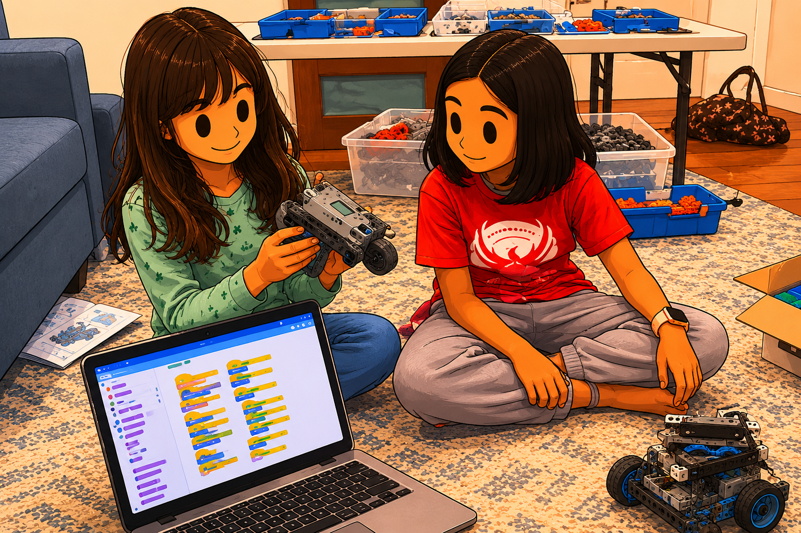
Demo Day
Year-end demonstration of the clawbot.
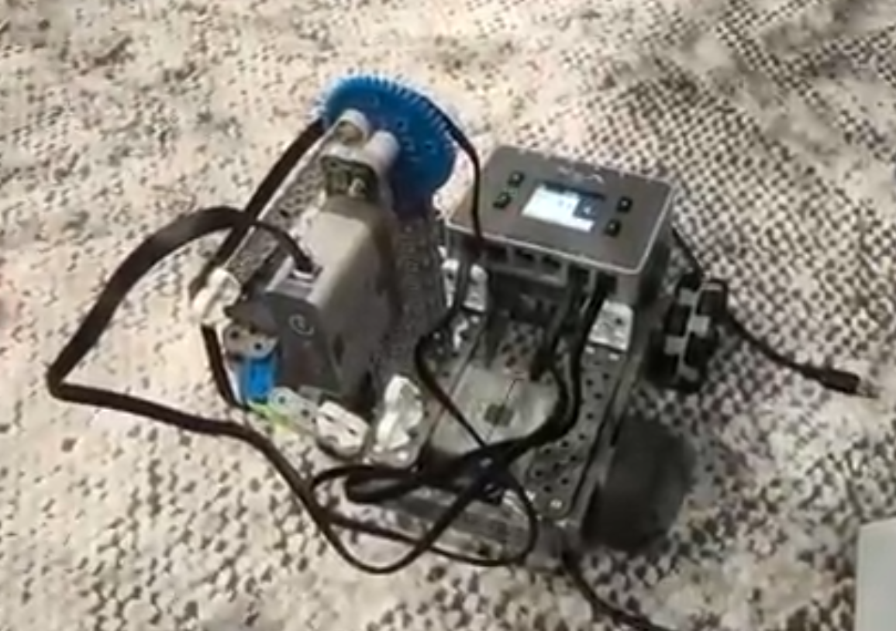
Bot in Action
Clawbot with a 180-degree pick-and-turn motion.
Welcome to the New Year
We kicked off the new year by reinforcing one of the most important and often overlooked skills in robotics: understanding what you have already built.
Before jumping into new builds, the girls revisited the Clawbot design by reconstructing it from memory.
- Took detailed notes
- Drew structural diagrams
- Broke down the robot into its core components
This exercise helps build a strong engineering foundation, because great builders do not just assemble — they understand.
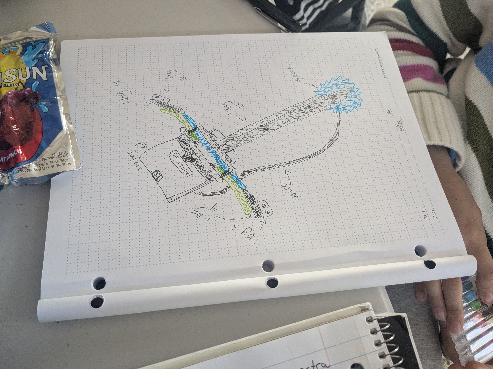
Engineering Design in Action
One of the core elements of competitions like VEX is the Engineering Design Notebook — a place where ideas, iterations, and learnings are captured. The girls took a step in that direction by documenting designs, visualizing structures, and thinking critically about why things work.
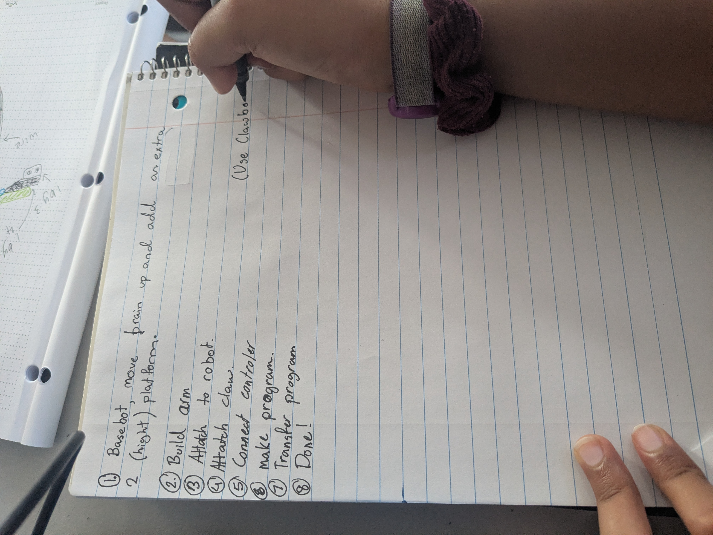
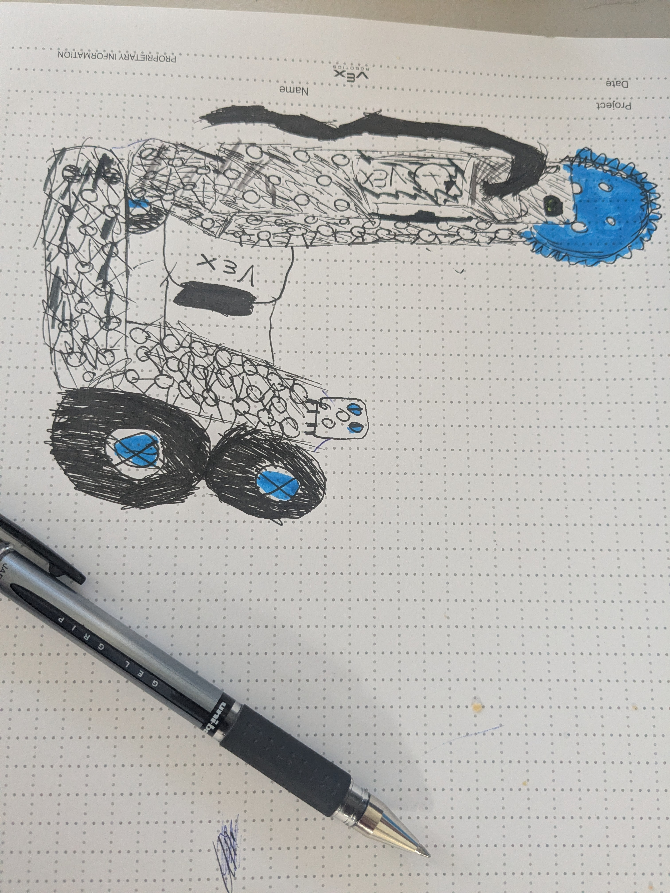
Build Progress: From Subsystems to Systems
February and March were all about building core mechanical subsystems that will later come together into a complete robot.
- Four-Bar Lift: Enables vertical motion and lifting capability
- Basebot: Provides mobility and structure
- Crawlbot: Explores alternative movement mechanisms
Each of these represents a building block in robotics design. The team also began working toward integrating components into a single unified robot body.
Science Fair Kick-off
We are excited that the girls are preparing for the upcoming Science Fair on March 26.
Team PickBot: 2 member team
Focus: building and iterating on a Four-Bar Lift mechanism, refining performance, improving stability and control, and preparing a demo.
Team FunBot: 2 member team
Mission ideas included:
- Ball Line Challenge: collect 10 ping-pong balls, transport them, and deposit them using a claw or flap
- Soccer Goal Challenge: navigate autonomously and push a ball into a goal within a defined boundary
Team FunBot will present at the Science Fair. Their progress so far:
- They designed a completely original robot architecture
- The design was not compiled from any existing build
- Reflects progression in thinking: ideation -> design -> execution
“If you can draw it, you understand it. If you can improve it, you’ve become an engineer.”
— Manisha’s Gemini-aided quote
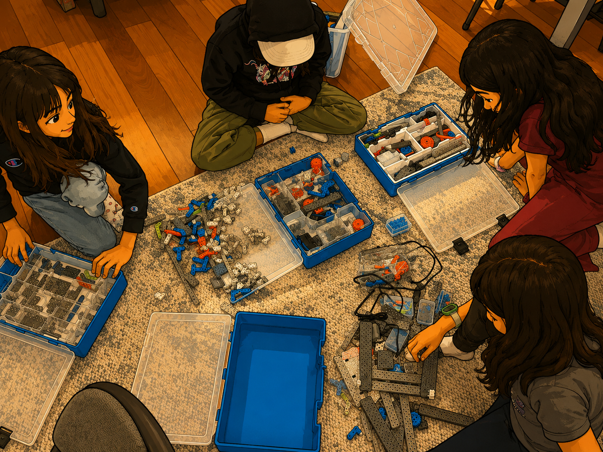
One of the milestones this month is the addition of a second VEX IQ kit. The girls spent one of the sessions organizing the parts and pieces into neat locations in the kit. Organization is key to ease of location and build of the parts, especially during live competitions, and hence it is a necessary muscle to build !
What’s Next?
- Integrating subsystems into full robots
- Iterating on Science Fair projects
- Practicing demonstrations and storytelling
- Strengthening engineering notebooks
Throwback to Classroom Learnings
Clawbot for Beginners
The girls built advanced clawbots from scratch.
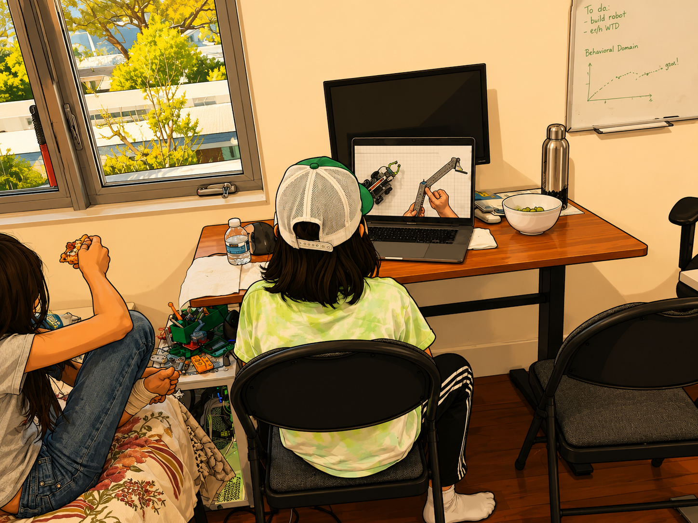
Four-Bar Lifts
The girls assembled a four-bar lift.
Focus Area: Intake Mechanisms
Looking ahead to competitions, we are beginning to focus on one of the most important concepts in VEX IQ robotics: intake mechanisms.
A typical competition robot includes three key subsystems:
- Intake: collect objects
- Collection / Storage: hold objects securely
- Dumping / Scoring: deliver objects to the goal
We are starting simple with basic intake designs, motion and control, and reliability testing. Over the next month, we will increase complexity by introducing multi-stage systems, better control and efficiency, and integration with full robot builds.
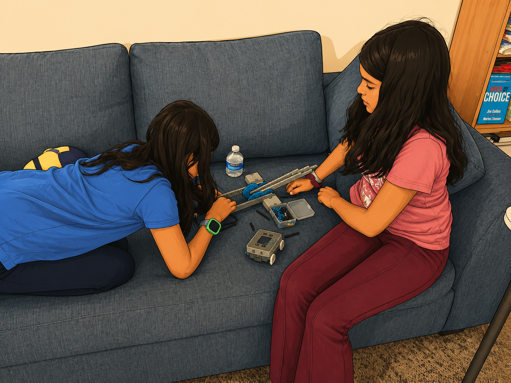
Preparing for Competitions
We are beginning early exposure to real-world robotics competitions. We plan to organize visits to VEX IQ regional competitions across the Bay Area, including events at Gunn High School.
Parent support is welcome for coordinating visits and carpooling.
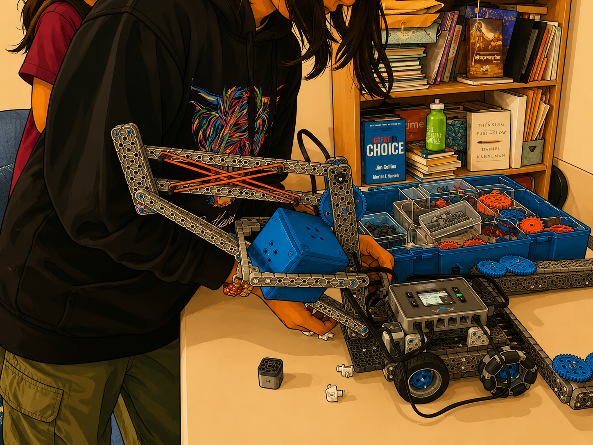
Thank You
Thank you for being a part of this journey. It is incredible to see the girls grow — not just as builders, but as thinkers, collaborators, and creators.
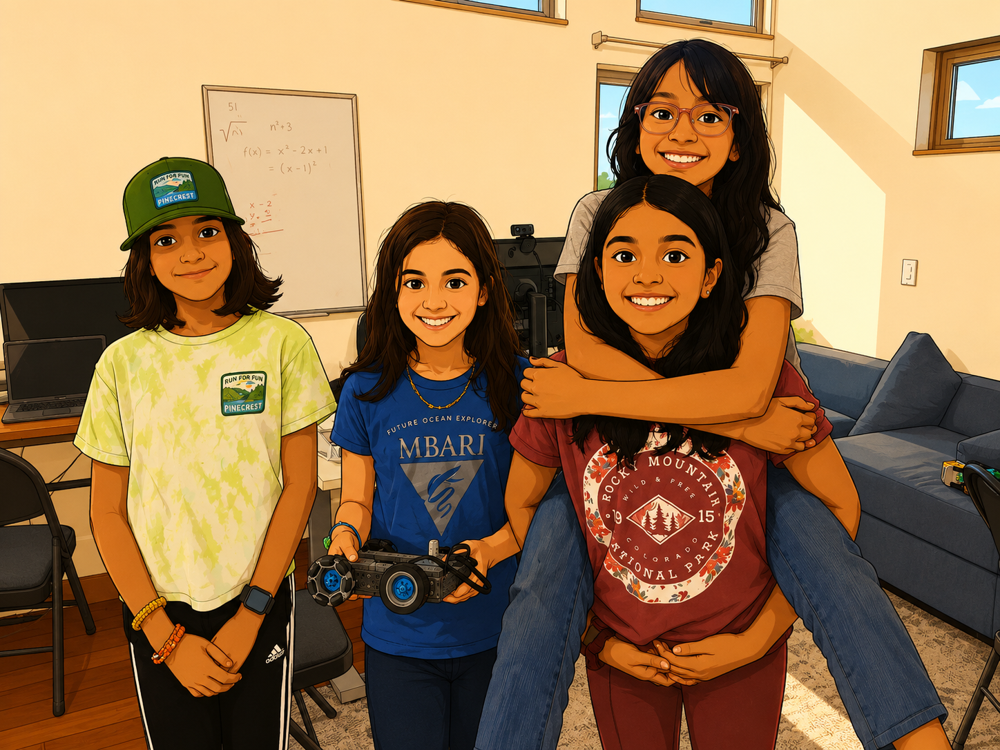